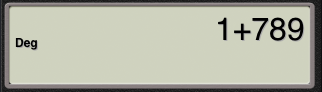

User Manual: How-Tos
-
How do I switch themes?
Click the "Theme" button in the bottom toolbar and it will open the theme selection dialog, touch your favorite one.
-
How do I clear current input and replace it with another?
Click the "CE" button, it will replace current input with init 0 and then you can continue input another numbers.
-
How do I reset the expression and start a new calculation?
Click the "C" button, it will reset the calculator, however the data in memeory (Saved in MS button) will keep.
-
How do I recalculate previous expressions?
Use the "History", you can load old expressions and then run or edit it. Click the "History" button in the bottom toolbar, the history selection dialog will show and the expressions sorted by the order of your input. The lastest expression is on the top. Choose one item and the calculator will run it again at once. NOTE: Standarnd and Scientific calculator will keep their own history. In the scientific calculator, it records the "angel modes" for every item besides of the expressions.
-
How do I edit the expression?
Use the backspace button, you can remove current input firstly, and then all current inputs removed, continue to remove the expressions till no characters can be removed. So use it, you can remove anything that you think it is wrong and then input the new expressions.
For example, you inputed 1+789+23
And then click 3 times backspace, it will remove '23' and the expression last '+'

Then click - 2, the expression become 1+789-2
now click =, it will return 788.
Combine the "history" and "backspace" button, you can edit any previous expressions.
-
How do I use the memory functions(MR, MS, MC, M+, M-)?
Both standard and scientific calculator contain a number memory. You can click the "MS" to save current input number for future using. And when you want to load the saved number, click "MR". Use "MC" to clear the memory. And "M+"/"M-" will add/subtract current input number from memory number and saved the result as the new memory number.
-
How do I convert between decimal number and hexadecimal number?
In scientific mode, you can use "Hex" button to convert number between "DEC" and "HEX". It is very useful for programmer.
Input a number, the default value is decimal, then click "Hex", it will return a new number with prefix "0x" that is a hexadecimal number. Example, input 100
Then click "Hex" button, it will return
If you first click "Hex" button, then input the number will be think as hexadecimal. For example, click "C" button and then click "Hex" button, the screen show "0x"
Then input 100, the screen show 0x100 that is a "hex" number

Then click the "Dec" button, you will see the decimal value 256.
-
How do I use the Int and Frac button?
Click "Int" button to get Integer part of a number and the "Frac" to get the fractional part of a number. For example, Int(123.456789) = 123 and Frac(123.456789) = 0.456789
-
How do I get the reverse function, such as asin, acos?
Click "Shift" button to get the reverse function in scientific mode.
After clicked, the calcutor button will change to resverse function, click it again to roll back.
-
How do I use the Mod and ʸ√x?
The "Mod" and "yroot" fuction need two parameters, and the format likes Mod(3;2) and yroot(3;2). The two parameter seperated with ";" and need use "(" and ")" to enclosed. Most of time, you need input the ")", the calculator can add it automatically. "Mod" means "Modulo". For example, you can click "8", "Mod", "3", "=", shows that
And input yroot(8;3= that means "3√8" by clicking "8", "ʸ√x", "3", "=" in turn,
-
How do I switch angle mode?
In scientific mode, support "Degree" and "Radian" angle mode. Use the "Deg" / "Rad" button to swith between these two modes. After clicked the button, current mode will show in the screen.

-
How do I the whole string of long result?
The result screen support touch to scroll, use finger to move left and right to see the whole long string. The string length is no limited, so you can calculate very complicated expressions.